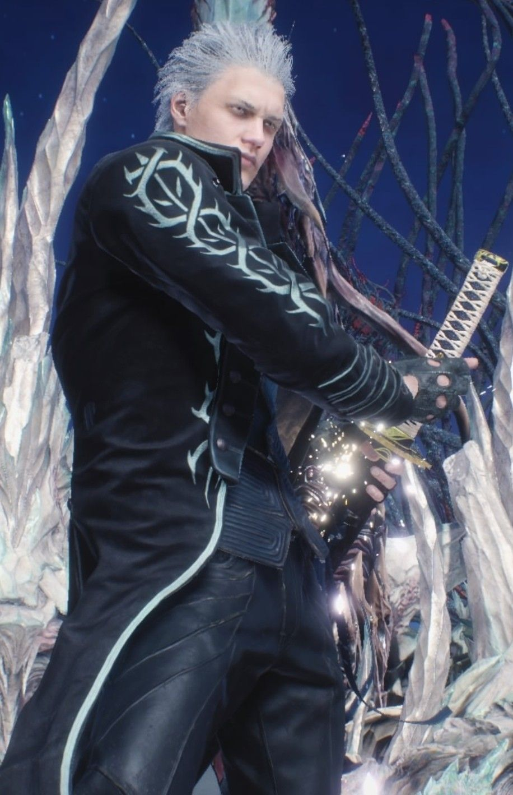
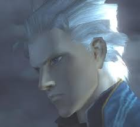
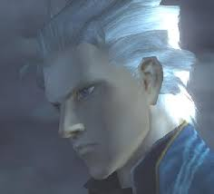
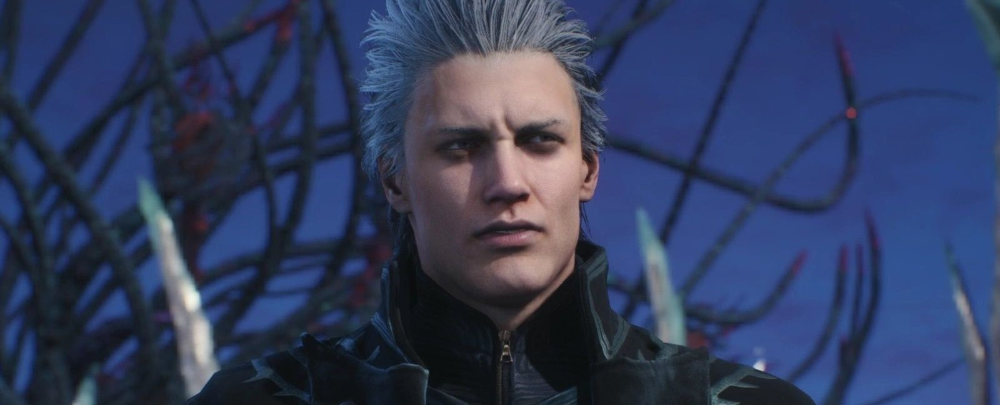

Vergil é filho do demônio Sparda e da humana Eva, o irmão gêmeo mais velho de Dante e pai de Nero. Ele é um dos personagens principais da série Devil May Cry.
Após a morte de sua mãe quando crianças, Vergil e Dante seguem caminhos separados, com Vergil rejeitando sua humanidade e abraçando sua herança demoníaca, em contraste com o abraço de seu irmão mais novo pela humanidade e a rejeição inicial do demoníaco. Sério e reservado, Vergil mostra disposição para fazer qualquer coisa em sua busca para obter o poder de seu pai, Sparda.
Vergil

Algum tempo antes de seu oitavo aniversário, Eva deu a Dante e Vergil uma metade do Amuleto Perfeito para cada um. Na mesma época, Sparda desapareceu e mais tarde morreu de circunstâncias desconhecidas, e Eva e os gêmeos ficaram vulneráveis. Em algum ponto após esses eventos, demônios enviados pelo Príncipe do Submundo, Mundus atacaram sua casa, incendiando parte dela. Durante o ataque, Vergil estava brincando sozinho em um parquinho a poucos metros da casa, onde provavelmente foi emboscado. Eventualmente, ele se viu cercado por demônios. Ao ver sua casa queimando à distância, Vergil desperta seu demônio interior e mata todos os demônios com Yamato. Vergil então fugiu acreditando que sua mãe o tinha abandonado, uma suspeita que o perseguiria pelo resto de sua vida, quando na verdade, Eva foi morta enquanto procurava desesperadamente por ele.
Em Devil May Cry 4 Special Edition:
Em algum momento, pelo menos dezessete anos antes dos eventos de Devil May Cry 4, Vergil visitou a cidade de Fortunapara investigar a Ordem da Espada. Após sua chegada à cidade, Vergil se perguntou por que eles adoram um demônio como Sparda como um deus. Enquanto ele ponderava, uma horda de espantalhos o cercava, mas Vergil os despacha com pouco esforço. Após aquele breve encontro, Vergil então continuou mais fundo na Fortuna, com a intenção de aprender mais sobre a Ordem e suas intenções. Depois de terminar sua investigação sobre o plano da Ordem, Vergil logo deixa a cidade. Ao sair, a sombra que ele projeta tem a forma do Devil Trigger de Nero, sugerindo o relacionamento deles.
Em Devil May Cry 3:
Arkham ajuda Vergil a quebrar os primeiros sete selos que Sparda lançou sobre o Temen-ni-gru, e então o direciona para a Terra Proibida na base da torre. Vergil é mais tarde visto ao lado de Arkham no topo da torre emergente. Quando o Hell Vanguard que eles enviaram para matar Dante retorna, tendo falhado em sua tarefa, Vergil imediatamente o despacha.
Vergil espera no topo da torre por Dante, e em um ponto despacha Arkham para eliminar Lady. Quando Dante chega ao pico da torre, os dois brincam e batalham ferozmente. Vergil sai vitorioso e leva a metade do Amuleto Perfeito de Dante como prêmio. Embora o Devil Trigger de Dante comece a se manifestar e Vergil se prepare para lutar com ele novamente, Arkham o incentiva a ignorar Dante porque "eles já têm tudo que precisam". Os dois então pulam da torre para reentrar na Terra Proibida. Conforme Vergil e Arkham se aproximam da porta final para a Guarida do Julgamento, Vergil revela seu conhecimento da traição de Arkham e lhe dá um golpe mortal. Ele então entra na câmara e começa o ritual para abrir o portão para o mundo demoníaco. Durante este ritual, ele é momentaneamente interrompido por um Beowulf cego, que o confundiu com Dante. No entanto, Vergil rapidamente acaba com Beowulf e toma sua alma como um Braço demoníaco.
Enquanto Dante se apressava para o selo final, Vergil não teve sorte em destravar o selo, e mais tarde foi interrompido por Dante. Os gêmeos travaram outra luta que foi interrompida por Lady fazendo com que a batalha terminasse empatada. Os dois irmãos demoníacos estão igualmente feridos, e Jester faz sua aparição anunciando que todos cumpriram bem seu papel. Mais tarde Arkham aparece vivo ainda e no meio de toda confusão completa o ritual, em seguida, brinca com os três guerreiros enquanto espera a ativação da torre. Assim que o fizer, ele os derruba da plataforma ascendente, onde Vergil cai em um abismo.
Mais tarde, após Dante entrar no mundo demoníaco, Vergil é visto passando pela Divine Library, com Lady ainda encolhida, ferida e em sofrimento, após sua batalha com Dante. Ela ouve seus passos e levanta os olhos para ver quem era, mas a essa altura, ele já havia passado pela porta que Dante pegou. Vergil mais tarde interrompe a luta de Dante com o Arkham ascendido, e os gêmeos acabam com Arkham juntos. No entanto, Vergil não desistiu de seu objetivo de obter o Force Edge, e os gêmeos são novamente forçados a lutar. Embora Dante seja capaz de derrotar Vergil, ele não consegue convencê-lo a retornar ao Mundo Humano. Vergil se deixa mergulhar ainda mais fundo no Mundo Inferior. No epílogo, Vergil é visto na Sala dos Caídos, enquanto três orbes brilhantes se aproximam. Vergil reconhece o demônio que se aproxima, comentando que se Sparda era capaz de derrotar o Rei Demônio, então ele deveria ser capaz de fazer isso também, antes de descartar sua bainha e atacar para lutar.
Em Devil May Cry 1:
Vergil, como base de Nelo Angelo, luta contra Dante várias vezes na Ilha Mallet. Em seu primeiro confronto, o amuleto de Dante escapa no momento em que Nelo Angelo tenta desferir o golpe mortal, e a visão dele desperta as memórias de Vergil, causando Nelo Angelo intensa agonia. Ele empurra Dante pro lado e é forçado a fugir, desaparecendo em um gêiser de chamas azuis e roxas. Nelo Ângelo o reencontra nos jardins, mas é derrotado e foge mais uma vez.
Em seu confronto final, Nelo Angelo tira o capacete, revelando o rosto de Vergil. Dante ainda sem perceber que é Vergil ali, duela e derrota Nelo Ângelo pela última vez. Nelo Ângelo solta sua espada grande e cambaleando para trás, o cavaleiro negro se ergue no ar, segurando a cabeça enquanto grita de dor antes de desaparecer em uma torrente de chamas azuis, com apenas a metade do amuleto de Vergil sendo deixada para trás, caindo no chão abaixo. Ao olhar para o amuleto, Dante tem um flashback de quando ele e seu gêmeo receberam pela primeira vez suas metades do Amuleto Perfeito e percebe que Nelo Angelo era Vergil o tempo todo.

Em Devil May Cry 5:
Vários anos após os eventos de Devil May Cry 4, Vergil foi capaz de escapar do Mundo Demoníaco, bem como se livrar da influência de Mundus sobre ele; no entanto, seu corpo estava enfraquecido e desmoronando de batalha após a batalha. Ele finalmente confrontou Nero e, apesar de sua condição enfraquecida, foi capaz de remover facilmente seu braço Devil Bringer completamente, bem como recuperar a Yamato, deixando Nero sangrando e inconsciente.
Depois que Urizen foi derrotado por Dante, V se aproximou dele e comentou sobre como ele e Urizen são um no mesmo antes de empalá-lo com sua bengala, que por sua vez uniu as duas metades novamente e no processo, restaurou Vergil. Dante quase imediatamente o atacou, mas Vergil repeliu seu exausto e ferido irmão com facilidade. Ele informou a Dante que derrotá-lo em um estado tão enfraquecido não fazia sentido, e disse-lhe para recuperar suas forças antes de partir para o topo das Qliphoth. Antes de partir, ele agradeceu a Nero por vigiar V. Pouco tempo depois, milhas acima da superfície da Terra no topo da Qliphoth, Vergil foi ouvido se perguntando em voz alta sobre seus respectivos destinos e de Dante, e se suas vidas poderiam ou não ter mudado se suas posições tivessem sido trocadas no dia da morte da mãe.
Dante finalmente chegou e exigiu que Vergil entregasse o Yamato, para que ele não pudesse mais abrir os tipos de portais para o Submundo que permitiram que as Qliphoth crescessem. Como Dante esperava, Vergil recusou, e os dois irmãos se envolveram em uma batalha total até a morte. No entanto, depois de um duelo longo e cansativo, nenhum foi capaz de superar o outro, embora ambos estivessem exaustos e exaustos. Durante a batalha, Dante informou a Vergil que Nero era seu filho, para grande surpresa deste último. Ambos então se transformaram em suas formas Sin Devil Trigger e atacaram um ao outro, procurando terminar a luta em um confronto final. No entanto, a luta foi abruptamente interrompida por Nero em sua verdadeira forma de demônio. Ele proclamou que não iria permitir que sua rivalidade continuasse, nem permitir que eles se matassem. Vergil tirou sarro de seu filho Nero, e propôs lutar com ele no lugar de Dante para determinar o resultado de sua batalha. Dante, por sua vez, simplesmente se manteve no chão observando a batalha. Depois de outra batalha, Nero conseguiu derrotar Vergil e tentou convencê-lo de que a Qliphoth precisava ser parada antes de qualquer outra consideração. Dante concordou com Nero, enquanto Vergil teimosamente apontou que ele ainda podia lutar.
Imediatamente após apontar isso, no entanto, Vergil concordou em ajudar a destruir as Qliphoth, aparentemente porque seu crescimento contínuo estava interferindo na luta entre ele e Dante. Ele e seu irmão então seguiram em direção ao Mundo Demoníaco para cortar a árvore e fechar o portal atrás deles, com Dante se despedindo de Nero primeiro e partindo. Vergil declarou a seu filho que não perderia seu próximo duelo. Ele então deu a Nero seu livro de poemas de William Blake como lembrança e disse-lhe que o guardasse até a próxima vez que se encontrassem. No Mundo Demoníaco, Dante e Vergil se aproximaram da base da árvore, apenas para serem cercados por uma horda de demônios menores que eles rapidamente eliminaram. Eventualmente, a árvore foi completamente destruída e Vergil fechou o portal que Urizen havia criado, prendendo ele e Dante no Inferno. Algumas semanas depois, os irmãos foram vistos brigando entre si enquanto discutiam sobre seus respectivos registros de vitória. Quando os dois começam outra partida de sparring, eles são interrompidos por uma horda de demônios. Enquanto os matava, Vergil irritadamente exigiu que Dante não gritasse sua frase de efeito "jackpot!" mas ele fez independentemente. Os dois então continuaram brigando enquanto matavam mais demônios, mas em geral pareciam ter deixado de lado seu rancor para sempre.
Em termos de vestuário, Vergil comumente usa um longo casaco azul abotoado de prata com três casacos separados. Um padrão serpentino branco corre ao redor da gola, com uma cabeça de cobra pendurada sobre o ombro esquerdo do casaco, e sua cauda escorregando para a direita, até a parte inferior do casaco. Um forro dourado percorre as bordas do casaco e um padrão de flor de seda dourada decora o forro interno. Cada punho do casaco também possui cinco alças de ouro abotoadas com forro de ouro. Em Devil May Cry 4: Special Edition, o casaco também apresenta alças idênticas em cada ombro, decoradas com botões de prata em vez de ouro. Antes de enfrentar os demônios, Vergil vestia um longo manto marrom com capuz onde esconde sua roupa principal.
Por baixo do casaco, Vergil usa um ascot azul marinho enrolado no pescoço, que paira sobre um colete preto sem mangas que revela seus braços e ombros bem torneados. Ele usa luvas sem dedos, um cinto marrom de pele de cobra com fivela prateada, calça verde-escura com um padrão de escala em toda a superfície e botas altas e marrons com duas tiras de fivela douradas no topo.
 Durante certas cenas do jogo em Devil May Cry 3, a metade dourada do Amuleto Perfeito de Vergil pode ser vista em seu pescoço, mas não é uma parte permanente de seu modelo de personagem.
Como Corrupt Vergil, a aparência de Vergil se torna muito mais sinistra; sua pele adquire uma palidez doentia, quase cinza, com veias azuis e pulsantes correndo por seu rosto. Seus olhos se tornam de um vermelho profundo, com pupilas pretas. Além disso, ele agora usa as roupas de seu pai em vez das suas, com sua metade do Amuleto Perfeito substituindo a metade de Dante como seu broche. Em Devil May Cry 4, sua roupa é ligeiramente modificada para seu casaco dividido em três abas semelhantes a sua roupa antiga.
Ao servir de base de Nelo Ângelo, Vergil tem tom de pele totalmente branco, com veias azuis e olhos vermelhos, sem pupila.
Em Devil May Cry 5, Vergil parece quase idêntico ao seu eu mais jovem do terceiro jogo, mas é mais velho na aparência devido ao passar do tempo. Seu casaco agora é preto com padrões de serpentina azul neon claro e três abas separadas com bordas levemente esfarrapadas. Vergil não está mais usando uma gravata ascot quando foi visto usando uma blusa de gola alta sem mangas sem mangas sob seu colete formal azul meia-noite. Ele também usa luvas sem dedos cinza-carvão, calças pretas e botas escuras cobertas por polainas azul-petróleo.
Quando ele inicialmente aparece em seu estado enfraquecido e separa o Devil Bringer de Nero para recuperar Yamato a fim de separar suas metades humana e demoníaca, criando V e Urizen no processo, Vergil usava uma longa capa preta com capuz esfarrapada para cobrir sua roupa e metade de sua rosto mostrou ser branco pálido com veias azuis, mantendo essas características mesmo após sua derrota de Dante como Nelo Angelo e sendo libertado da corrupção de Mundus, no entanto, quando V e Urizen se reúnem para trazer Vergil de volta, sua pele volta ao normal.
Ao contrário de Dante, Vergil está disposto a abraçar sua herança demoníaca e procura imitar o poder de seu pai e sua personalidade fria. Enquanto Dante busca proteger a humanidade dos demônios, a única coisa que Vergil busca na vida é um poder demoníaco cada vez maior. Seu desejo de poder é uma obsessão quase definidora de caráter para ele, e quase certamente decorre de não ter apenas perdido sua família quando criança, mas de estar sozinho desde o dia da destruição de sua família. Apesar de sua personalidade normal de desprezo e frio, ele preza certas coisas como a lâmina Yamato, uma katana escura deixada para ele como uma lembrança de seu pai, sua própria metade do Amuleto Perfeito, uma lembrança de sua mãe e, depois de seu própria realização, seu próprio filho Nero. Em Devil May Cry 3, Vergil parece revelar alguns de seus sentimentos ao afirmar a Dante: "O poder controla tudo, e sem força você não pode proteger nada, muito menos a si mesmo.". Isso pode ser uma referência à morte de sua mãe. Também pode implicar que Vergil busque o poder como compensação por não protegê-la. Seu fracasso também pode tê-lo feito abandonar relacionamentos humanos íntimos, devido à sua fragilidade de humanidade percebida.
Biografia
Vergil e seu irmão gêmeo mais novo, Dante, foram concebidos pelo lendário Cavaleiro das Trevas Sparda e a humana Eva, onde residiam em uma mansão isolada perto de Red Grave City. Crescendo, Vergil frequentemente brigava com Dante por várias coisas, e treinava ao lado de seu irmão com seu pai.
Algum tempo antes de seu oitavo aniversário, Eva deu a Dante e Vergil uma metade do Amuleto Perfeito para cada um. Na mesma época, Sparda desapareceu e mais tarde morreu de circunstâncias desconhecidas, e Eva e os gêmeos ficaram vulneráveis. Em algum ponto após esses eventos, demônios enviados pelo Príncipe do Submundo, Mundus atacaram sua casa, incendiando parte dela. Durante o ataque, Vergil estava brincando sozinho em um parquinho a poucos metros da casa, onde provavelmente foi emboscado. Eventualmente, ele se viu cercado por demônios. Ao ver sua casa queimando à distância, Vergil desperta seu demônio interior e mata todos os demônios com Yamato. Vergil então fugiu acreditando que sua mãe o tinha abandonado, uma suspeita que o perseguiria pelo resto de sua vida, quando na verdade, Eva foi morta enquanto procurava desesperadamente por ele.
Em Devil May Cry 4 Special Edition:
Em algum momento, pelo menos dezessete anos antes dos eventos de Devil May Cry 4, Vergil visitou a cidade de Fortunapara investigar a Ordem da Espada. Após sua chegada à cidade, Vergil se perguntou por que eles adoram um demônio como Sparda como um deus. Enquanto ele ponderava, uma horda de espantalhos o cercava, mas Vergil os despacha com pouco esforço. Após aquele breve encontro, Vergil então continuou mais fundo na Fortuna, com a intenção de aprender mais sobre a Ordem e suas intenções. Depois de terminar sua investigação sobre o plano da Ordem, Vergil logo deixa a cidade. Ao sair, a sombra que ele projeta tem a forma do Devil Trigger de Nero, sugerindo o relacionamento deles.
Em Devil May Cry 3:
Arkham ajuda Vergil a quebrar os primeiros sete selos que Sparda lançou sobre o Temen-ni-gru, e então o direciona para a Terra Proibida na base da torre. Vergil é mais tarde visto ao lado de Arkham no topo da torre emergente. Quando o Hell Vanguard que eles enviaram para matar Dante retorna, tendo falhado em sua tarefa, Vergil imediatamente o despacha.
Vergil espera no topo da torre por Dante, e em um ponto despacha Arkham para eliminar Lady. Quando Dante chega ao pico da torre, os dois brincam e batalham ferozmente. Vergil sai vitorioso e leva a metade do Amuleto Perfeito de Dante como prêmio. Embora o Devil Trigger de Dante comece a se manifestar e Vergil se prepare para lutar com ele novamente, Arkham o incentiva a ignorar Dante porque "eles já têm tudo que precisam". Os dois então pulam da torre para reentrar na Terra Proibida. Conforme Vergil e Arkham se aproximam da porta final para a Guarida do Julgamento, Vergil revela seu conhecimento da traição de Arkham e lhe dá um golpe mortal. Ele então entra na câmara e começa o ritual para abrir o portão para o mundo demoníaco. Durante este ritual, ele é momentaneamente interrompido por um Beowulf cego, que o confundiu com Dante. No entanto, Vergil rapidamente acaba com Beowulf e toma sua alma como um Braço demoníaco.
Enquanto Dante se apressava para o selo final, Vergil não teve sorte em destravar o selo, e mais tarde foi interrompido por Dante. Os gêmeos travaram outra luta que foi interrompida por Lady fazendo com que a batalha terminasse empatada. Os dois irmãos demoníacos estão igualmente feridos, e Jester faz sua aparição anunciando que todos cumpriram bem seu papel. Mais tarde Arkham aparece vivo ainda e no meio de toda confusão completa o ritual, em seguida, brinca com os três guerreiros enquanto espera a ativação da torre. Assim que o fizer, ele os derruba da plataforma ascendente, onde Vergil cai em um abismo.
Mais tarde, após Dante entrar no mundo demoníaco, Vergil é visto passando pela Divine Library, com Lady ainda encolhida, ferida e em sofrimento, após sua batalha com Dante. Ela ouve seus passos e levanta os olhos para ver quem era, mas a essa altura, ele já havia passado pela porta que Dante pegou. Vergil mais tarde interrompe a luta de Dante com o Arkham ascendido, e os gêmeos acabam com Arkham juntos. No entanto, Vergil não desistiu de seu objetivo de obter o Force Edge, e os gêmeos são novamente forçados a lutar. Embora Dante seja capaz de derrotar Vergil, ele não consegue convencê-lo a retornar ao Mundo Humano. Vergil se deixa mergulhar ainda mais fundo no Mundo Inferior. No epílogo, Vergil é visto na Sala dos Caídos, enquanto três orbes brilhantes se aproximam. Vergil reconhece o demônio que se aproxima, comentando que se Sparda era capaz de derrotar o Rei Demônio, então ele deveria ser capaz de fazer isso também, antes de descartar sua bainha e atacar para lutar.
Em Devil May Cry 1:
Vergil, como base de Nelo Angelo, luta contra Dante várias vezes na Ilha Mallet. Em seu primeiro confronto, o amuleto de Dante escapa no momento em que Nelo Angelo tenta desferir o golpe mortal, e a visão dele desperta as memórias de Vergil, causando Nelo Angelo intensa agonia. Ele empurra Dante pro lado e é forçado a fugir, desaparecendo em um gêiser de chamas azuis e roxas. Nelo Ângelo o reencontra nos jardins, mas é derrotado e foge mais uma vez.
Em seu confronto final, Nelo Angelo tira o capacete, revelando o rosto de Vergil. Dante ainda sem perceber que é Vergil ali, duela e derrota Nelo Ângelo pela última vez. Nelo Ângelo solta sua espada grande e cambaleando para trás, o cavaleiro negro se ergue no ar, segurando a cabeça enquanto grita de dor antes de desaparecer em uma torrente de chamas azuis, com apenas a metade do amuleto de Vergil sendo deixada para trás, caindo no chão abaixo. Ao olhar para o amuleto, Dante tem um flashback de quando ele e seu gêmeo receberam pela primeira vez suas metades do Amuleto Perfeito e percebe que Nelo Angelo era Vergil o tempo todo.
Em Devil May Cry 5:
Vários anos após os eventos de Devil May Cry 4, Vergil foi capaz de escapar do Mundo Demoníaco, bem como se livrar da influência de Mundus sobre ele; no entanto, seu corpo estava enfraquecido e desmoronando de batalha após a batalha. Ele finalmente confrontou Nero e, apesar de sua condição enfraquecida, foi capaz de remover facilmente seu braço Devil Bringer completamente, bem como recuperar a Yamato, deixando Nero sangrando e inconsciente.
Depois que Urizen foi derrotado por Dante, V se aproximou dele e comentou sobre como ele e Urizen são um no mesmo antes de empalá-lo com sua bengala, que por sua vez uniu as duas metades novamente e no processo, restaurou Vergil. Dante quase imediatamente o atacou, mas Vergil repeliu seu exausto e ferido irmão com facilidade. Ele informou a Dante que derrotá-lo em um estado tão enfraquecido não fazia sentido, e disse-lhe para recuperar suas forças antes de partir para o topo das Qliphoth. Antes de partir, ele agradeceu a Nero por vigiar V. Pouco tempo depois, milhas acima da superfície da Terra no topo da Qliphoth, Vergil foi ouvido se perguntando em voz alta sobre seus respectivos destinos e de Dante, e se suas vidas poderiam ou não ter mudado se suas posições tivessem sido trocadas no dia da morte da mãe.
Dante finalmente chegou e exigiu que Vergil entregasse o Yamato, para que ele não pudesse mais abrir os tipos de portais para o Submundo que permitiram que as Qliphoth crescessem. Como Dante esperava, Vergil recusou, e os dois irmãos se envolveram em uma batalha total até a morte. No entanto, depois de um duelo longo e cansativo, nenhum foi capaz de superar o outro, embora ambos estivessem exaustos e exaustos. Durante a batalha, Dante informou a Vergil que Nero era seu filho, para grande surpresa deste último. Ambos então se transformaram em suas formas Sin Devil Trigger e atacaram um ao outro, procurando terminar a luta em um confronto final. No entanto, a luta foi abruptamente interrompida por Nero em sua verdadeira forma de demônio. Ele proclamou que não iria permitir que sua rivalidade continuasse, nem permitir que eles se matassem. Vergil tirou sarro de seu filho Nero, e propôs lutar com ele no lugar de Dante para determinar o resultado de sua batalha. Dante, por sua vez, simplesmente se manteve no chão observando a batalha. Depois de outra batalha, Nero conseguiu derrotar Vergil e tentou convencê-lo de que a Qliphoth precisava ser parada antes de qualquer outra consideração. Dante concordou com Nero, enquanto Vergil teimosamente apontou que ele ainda podia lutar.
Imediatamente após apontar isso, no entanto, Vergil concordou em ajudar a destruir as Qliphoth, aparentemente porque seu crescimento contínuo estava interferindo na luta entre ele e Dante. Ele e seu irmão então seguiram em direção ao Mundo Demoníaco para cortar a árvore e fechar o portal atrás deles, com Dante se despedindo de Nero primeiro e partindo. Vergil declarou a seu filho que não perderia seu próximo duelo. Ele então deu a Nero seu livro de poemas de William Blake como lembrança e disse-lhe que o guardasse até a próxima vez que se encontrassem. No Mundo Demoníaco, Dante e Vergil se aproximaram da base da árvore, apenas para serem cercados por uma horda de demônios menores que eles rapidamente eliminaram. Eventualmente, a árvore foi completamente destruída e Vergil fechou o portal que Urizen havia criado, prendendo ele e Dante no Inferno. Algumas semanas depois, os irmãos foram vistos brigando entre si enquanto discutiam sobre seus respectivos registros de vitória. Quando os dois começam outra partida de sparring, eles são interrompidos por uma horda de demônios. Enquanto os matava, Vergil irritadamente exigiu que Dante não gritasse sua frase de efeito "jackpot!" mas ele fez independentemente. Os dois então continuaram brigando enquanto matavam mais demônios, mas em geral pareciam ter deixado de lado seu rancor para sempre.
Aparência
Em termos de aparência física, Vergil tem pele clara, embora pálida, e cabelo branco penteado para trás, o que enfatiza a expressão feroz, embora estóica, de seu rosto, no entanto, quando seu cabelo é penteado para baixo ou fica molhado, sua aparência é fisicamente indistinguível de seu irmão gêmeo mais novo, Dante. Assim como seu irmão, ele também tem os mesmos olhos azuis.
Em termos de vestuário, Vergil comumente usa um longo casaco azul abotoado de prata com três casacos separados. Um padrão serpentino branco corre ao redor da gola, com uma cabeça de cobra pendurada sobre o ombro esquerdo do casaco, e sua cauda escorregando para a direita, até a parte inferior do casaco. Um forro dourado percorre as bordas do casaco e um padrão de flor de seda dourada decora o forro interno. Cada punho do casaco também possui cinco alças de ouro abotoadas com forro de ouro. Em Devil May Cry 4: Special Edition, o casaco também apresenta alças idênticas em cada ombro, decoradas com botões de prata em vez de ouro. Antes de enfrentar os demônios, Vergil vestia um longo manto marrom com capuz onde esconde sua roupa principal.
Por baixo do casaco, Vergil usa um ascot azul marinho enrolado no pescoço, que paira sobre um colete preto sem mangas que revela seus braços e ombros bem torneados. Ele usa luvas sem dedos, um cinto marrom de pele de cobra com fivela prateada, calça verde-escura com um padrão de escala em toda a superfície e botas altas e marrons com duas tiras de fivela douradas no topo.
 Durante certas cenas do jogo em Devil May Cry 3, a metade dourada do Amuleto Perfeito de Vergil pode ser vista em seu pescoço, mas não é uma parte permanente de seu modelo de personagem.
Como Corrupt Vergil, a aparência de Vergil se torna muito mais sinistra; sua pele adquire uma palidez doentia, quase cinza, com veias azuis e pulsantes correndo por seu rosto. Seus olhos se tornam de um vermelho profundo, com pupilas pretas. Além disso, ele agora usa as roupas de seu pai em vez das suas, com sua metade do Amuleto Perfeito substituindo a metade de Dante como seu broche. Em Devil May Cry 4, sua roupa é ligeiramente modificada para seu casaco dividido em três abas semelhantes a sua roupa antiga.
Ao servir de base de Nelo Ângelo, Vergil tem tom de pele totalmente branco, com veias azuis e olhos vermelhos, sem pupila.
Em Devil May Cry 5, Vergil parece quase idêntico ao seu eu mais jovem do terceiro jogo, mas é mais velho na aparência devido ao passar do tempo. Seu casaco agora é preto com padrões de serpentina azul neon claro e três abas separadas com bordas levemente esfarrapadas. Vergil não está mais usando uma gravata ascot quando foi visto usando uma blusa de gola alta sem mangas sem mangas sob seu colete formal azul meia-noite. Ele também usa luvas sem dedos cinza-carvão, calças pretas e botas escuras cobertas por polainas azul-petróleo.
Quando ele inicialmente aparece em seu estado enfraquecido e separa o Devil Bringer de Nero para recuperar Yamato a fim de separar suas metades humana e demoníaca, criando V e Urizen no processo, Vergil usava uma longa capa preta com capuz esfarrapada para cobrir sua roupa e metade de sua rosto mostrou ser branco pálido com veias azuis, mantendo essas características mesmo após sua derrota de Dante como Nelo Angelo e sendo libertado da corrupção de Mundus, no entanto, quando V e Urizen se reúnem para trazer Vergil de volta, sua pele volta ao normal.
Personalidade
Em contraste com a personalidade turbulenta, expansiva e extrovertida de seu irmão gêmeo Dante, Vergil é calmo, frio, controlado e introvertido, constantemente mantendo uma aura de destemor. Vergil se preocupa pouco com o bem-estar daqueles ao seu redor, e é inflexível em sua busca pelo poder, no entanto, apesar de seu comportamento frio e implacável, ele é um guerreiro honrado que mantém seu próprio conjunto de morais e disciplinas. Vergil despreza lutar sujo e se recusa a usar armas de fogo, considerando-as indignas de um "verdadeiro guerreiro", embora ele ainda use ataques à distância se eles puderem ser originados de uma arma corpo-a-corpo. Seu código de honra ainda vem à tona enquanto ele é corrompido como Nelo Angelo, ele se recusa a atacar Dante por trás e espera até que ambos estejam fora para começar sua primeira luta. Em Devil May Cry 5, depois de ser restaurado e atacado por Dante, ele notou que seu irmão estava fraco e ferido de sua luta com Urizen. Como tal, apesar de ter sido capaz de matar Dante facilmente, Vergil permitiu que ele descansasse e se recuperasse, afirmando que derrotar Dante enquanto estava enfraquecido não tinha significado. Ele também tem uma tendência a falar de uma maneira muito formal e um tanto antiquada, possivelmente como consequência de ter lido muita literatura clássica em sua juventude. Deve-se notar, entretanto, que seu "código" é mais baseado em desafiar a si mesmo do que qualquer tipo de estrutura moral. Como tal, ele está perfeitamente disposto a utilizar métodos ou táticas que podem ser desonrosos para se tornar mais forte ou em situações em que ele simplesmente não tem outra escolha. Por exemplo, quando ele arrancou o braço do demônio de Nero para recuperar Yamato, ele essencialmente emboscou Nero enquanto ele estava de costas.
Ao contrário de Dante, Vergil está disposto a abraçar sua herança demoníaca e procura imitar o poder de seu pai e sua personalidade fria. Enquanto Dante busca proteger a humanidade dos demônios, a única coisa que Vergil busca na vida é um poder demoníaco cada vez maior. Seu desejo de poder é uma obsessão quase definidora de caráter para ele, e quase certamente decorre de não ter apenas perdido sua família quando criança, mas de estar sozinho desde o dia da destruição de sua família. Apesar de sua personalidade normal de desprezo e frio, ele preza certas coisas como a lâmina Yamato, uma katana escura deixada para ele como uma lembrança de seu pai, sua própria metade do Amuleto Perfeito, uma lembrança de sua mãe e, depois de seu própria realização, seu próprio filho Nero. Em Devil May Cry 3, Vergil parece revelar alguns de seus sentimentos ao afirmar a Dante: "O poder controla tudo, e sem força você não pode proteger nada, muito menos a si mesmo.". Isso pode ser uma referência à morte de sua mãe. Também pode implicar que Vergil busque o poder como compensação por não protegê-la. Seu fracasso também pode tê-lo feito abandonar relacionamentos humanos íntimos, devido à sua fragilidade de humanidade percebida.
